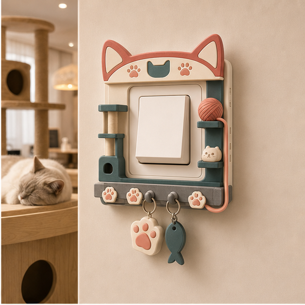
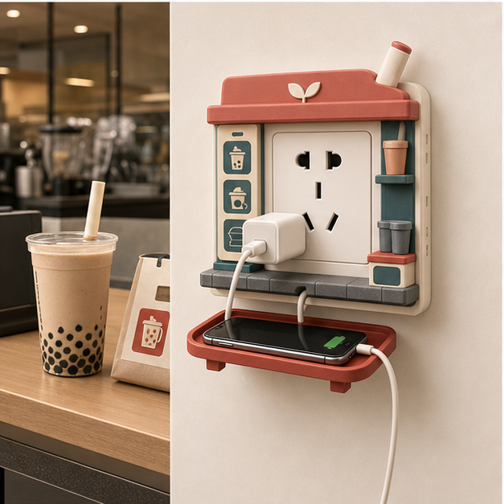
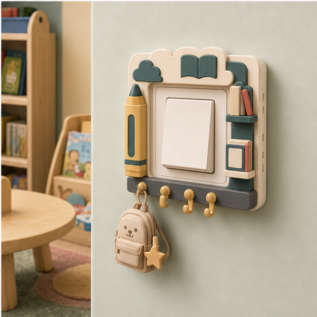
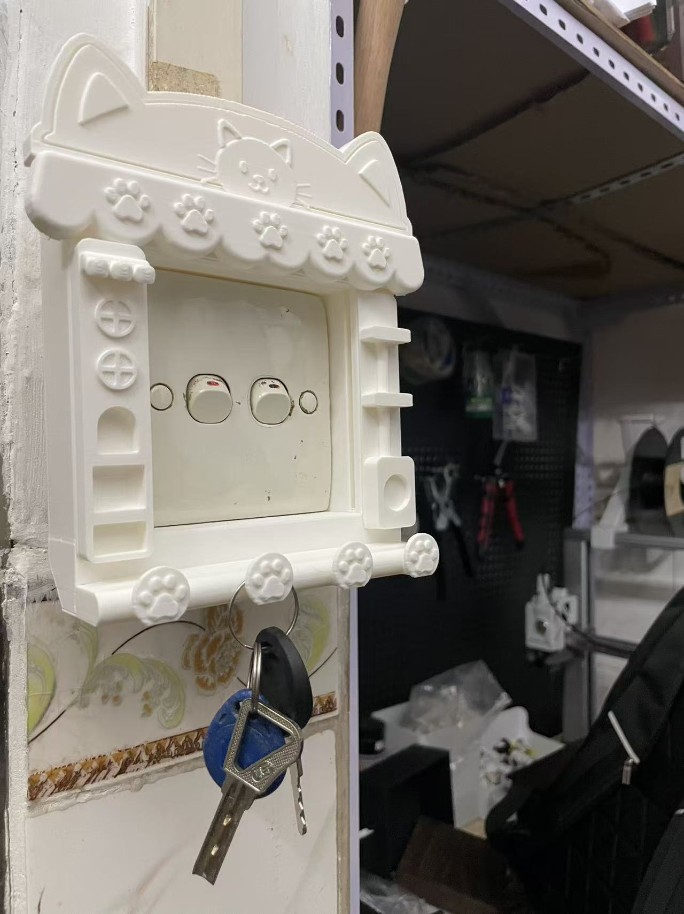
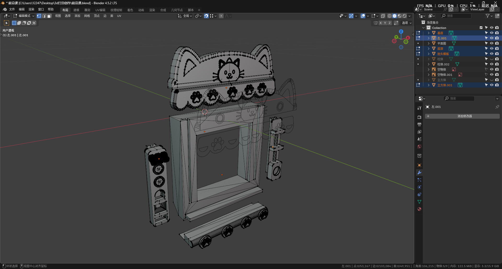
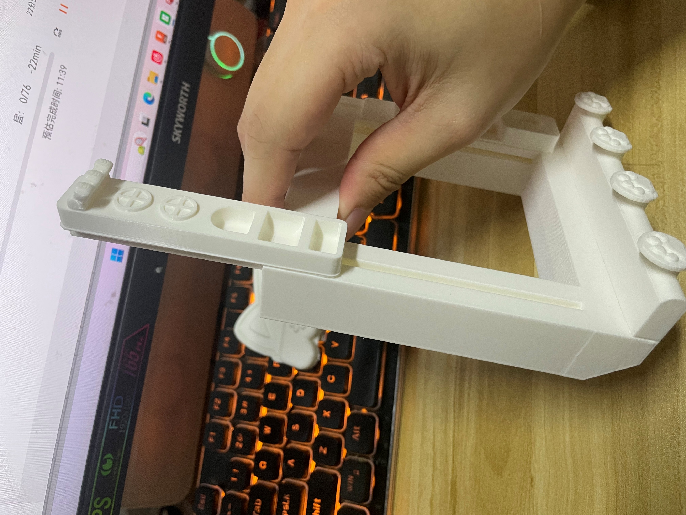
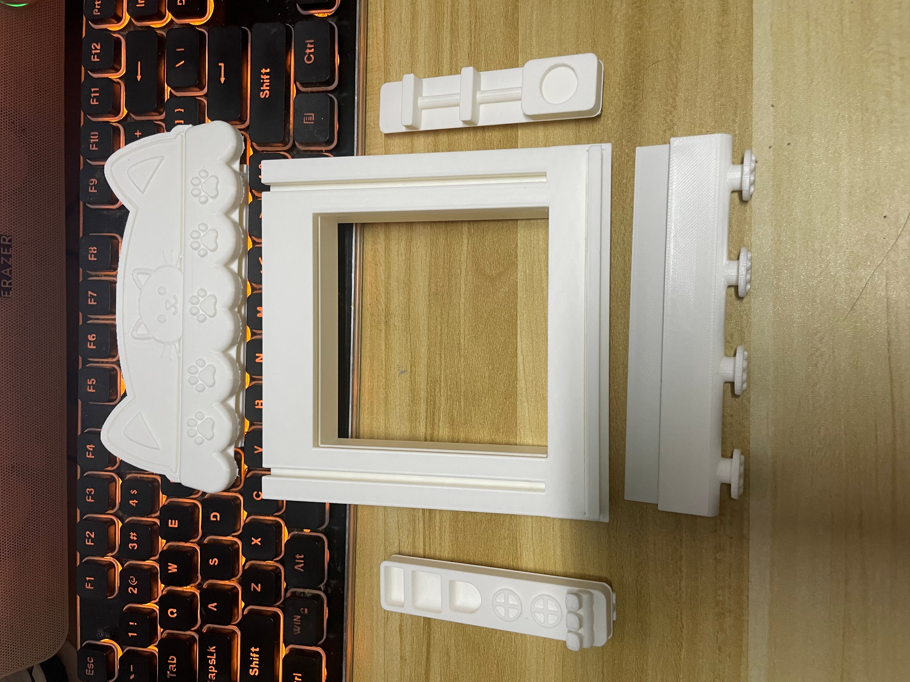
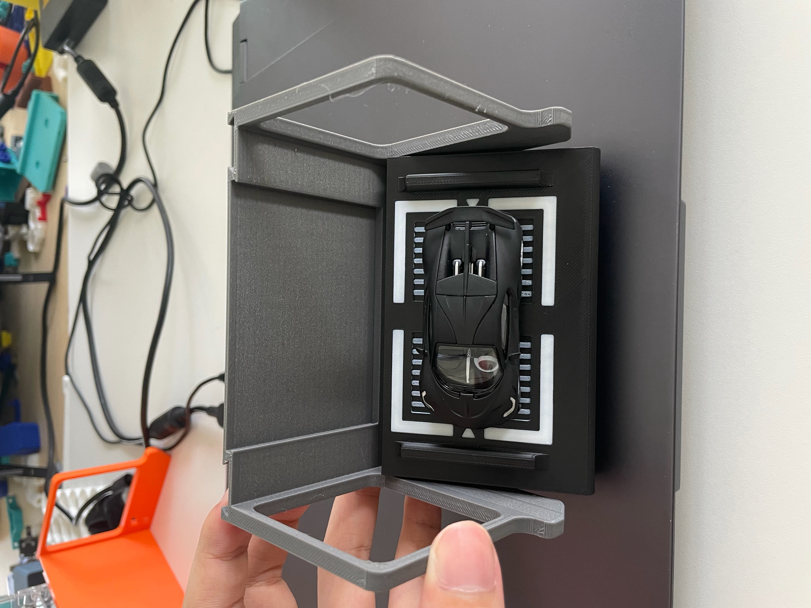
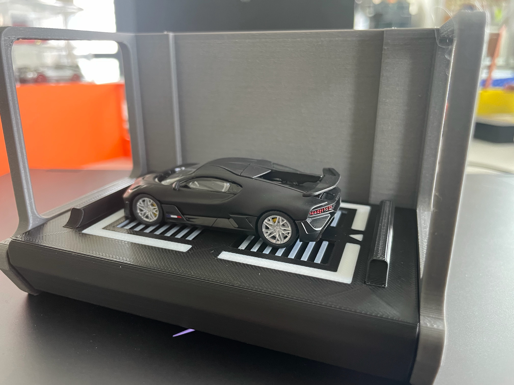

原阶段继续推进
保留“钥匙解域”中关于开启、触发、仪式动作和状态转换的研究，后续对应涉及结构的情绪机关产品。
Week 06 / Emotional Design For Spatial Interfaces
这一周把“日常情绪机关”进一步落地为双线方案：一条继续探索拉杆、按压、旋转等结构机关；另一条先完成开关、插座外部的装饰情绪模块，用微型场景验证情绪价值。

Current Progress
保留“钥匙解域”中关于开启、触发、仪式动作和状态转换的研究，后续对应涉及结构的情绪机关产品。
基于开关、插座等空间功能点，先完成一组纯装饰化模块，用场景叙事和视觉细节产生情绪价值。
Core Content
开关、插座、门把手、灯具等原本被忽略的空间功能界面。
通过仪式动作、视觉装饰和场景联想，让空间产生亲近感。
最终转化为结构机关产品与装饰化文创模块两个系列。
关键不是继续做钥匙造型，而是保留钥匙背后的开启关系。
Final Output Framework
Track 01
对应原阶段内容。重点研究拉杆、按压、旋转、滑动等具有仪式感的结构动作，让人通过使用动作感知空间情绪转换。
示例包括拉杆式开关、老虎机语义开关、可旋转状态切换器。它负责验证“动作情绪”：用户做出一个动作，空间状态随之改变。
Track 02
对应当前阶段效果图。重点研究开关、插座外部装饰壳体如何通过微型场景、挂件、托盘和主题细节，让空间功能点产生情绪价值。
示例包括便利店插座、猫咪开关、奶茶插座、阅读角开关挂架。它负责验证“场景情绪”：用户看到界面，就产生亲近、补给、陪伴或学习的联想。
Why Decorative Modules First
结构交互涉及稳定性、安装安全和模型精度，本阶段制作风险更高。
纯装饰块可以先回答核心问题：日常功能点是否能通过场景化设计产生情绪价值。
装饰模块是结课产出中更容易展示完整度的一条可落地分支。
后续结构产品可以沿用装饰模块形成的主题语言、色彩体系和空间语义。
Decorative Module Overview
插座从电气接口转化成“便利店能量补给站”，用货架、遮棚和托盘建立补给语义。
开关被转译为“猫屋入口”，猫耳、爪印、毛线球和鱼形挂件建立陪伴语义。
插座被转译为饮品柜台，用杯子、吸管、外卖袋和台面制造消费场景。
开关被转译为阅读角，书本、云朵、蜡笔和书包挂件形成儿童学习语义。
Visual Outcomes




Parametric And 3D Printing

Model Logic
模型被拆成底座底壳、顶部模块、底部模块、悬挂模块等部分。这样的结构方便回退、调整和重塑，也方便对接后续生产。
当前验证重点不是一次完成最终产品，而是确认安装难易程度、3D 打印外观程度、模块组合方式和真实面板尺寸是否可行。
Prototype Evidence




Next Plan
优先选择便利店插座和猫咪开关，形成一插座一开关的基础组合。
继续修正当前粗糙部分，让效果图和打印模型更一致。
用纸板或 3D 打印制作拉杆式开关，证明结构线仍在推进。
以真实面板尺寸为基准，确定外框厚度、挂钩位置、托盘承重。
完成卧室、宿舍、店铺、儿童房场景，以及文创命名、色卡和主题标签。
Week 06 Conclusion
本研究从钥匙的“开启与转换”关系出发，将空间中的开关、插座等功能界面重新设计为情绪载体。第六周进一步明确：最终产出不是单一产品，而是两类互补结果。
结构情绪机关负责动作仪式，装饰情绪模块负责场景情绪。它们共同让被忽略的功能点被重新看见，让空间在日常使用中自然产生情绪价值。